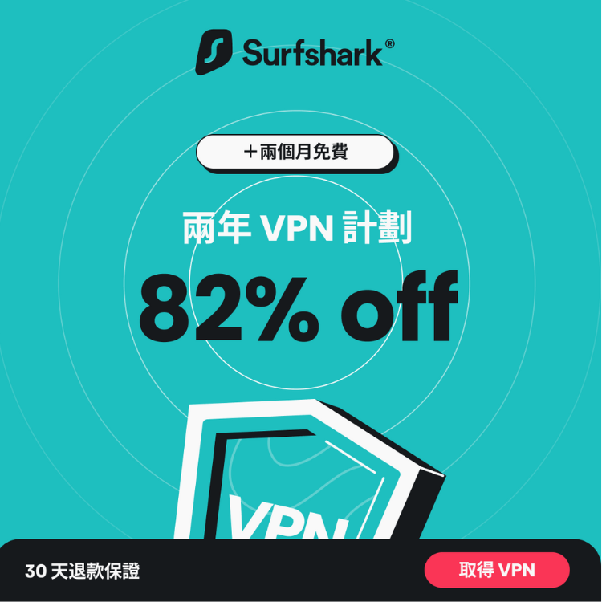

在如今的數位時代，網絡安全和隱私變得越來越重要。選擇一款可靠的 VPN 服務可以幫助你保護在線活動、隱藏真實 IP 地址以及繞過地區限制。Surfshark 是一款受到廣泛推崇的 VPN 服務，它以其獨特的功能和優勢脫穎而出。以下是為什麼推薦 Surfshark 的幾個關鍵原因：
虛擬私人網路（VPN）是一種技術，通過在公眾互聯網上建立一個加密的隧道來保護你的網絡連接。VPN 允許你隱藏真實的 IP 地址，並加密你的數據傳輸，從而提高你的在線隱私和安全。使用 VPN 時，你的網絡流量會通過一個遠端伺服器進行轉發，這樣網站和服務就只能看到伺服器的 IP 地址，而非你的實際 IP 地址。
是不是有點複雜？白話的來說IP 地址就像是你家裡的門牌號碼。作用是互聯網上每個設備的唯一標識，用來告訴其他設備如何找到你。當你上網時，網站和其他服務可以通過你的 IP 地址知道你的位置和身份。而VPN就像是你在家裡加了一個偽裝門，讓外界無法看到你的真實門牌號碼。當你使用 VPN 時，它會將你的網絡流量通過另一個伺服器進行轉發。這樣，外界看到的就不是你家的真實門牌號碼（即你的真實 IP 地址），而是 VPN 伺服器的門牌號碼。這樣可以隱藏你的真實身份，保護你的隱私。
簡單來說，IP 地址 是你的網絡「門牌號碼」，讓其他人知道你的設備在哪裡。VPN 則是用來隱藏你的真實「門牌號碼」，保護你的網絡隱私和安全。
Surfshark 允許無限制數量的設備同時連接一個帳號。這對於擁有多個設備的用戶來說，非常實用，無需擔心額外費用或配置問題。
Surfshark 採用先進的 AES-256-GCM 加密技術來保護你的數據，確保你的在線活動不會被第三方竊取或監視。它遵循無日誌政策，不記錄用戶的在線活動。此外，CleanWeb 功能能有效阻擋廣告和惡意軟體，提升安全性。
Surfshark 的 Camouflage Mode 和 NoBorders 模式能在受限地區隱藏 VPN 使用痕跡，保護你的隱私。它還可以繞過地區限制，讓你訪問全球範圍內的內容和服務。
Surfshark 提供相對實惠的訂閱計劃，並且經常有折扣促銷，性價比高。無論是長期還是短期需求，Surfshark 都能滿足你的預算要求。
Surfshark 擁有簡單直觀的界面，支持多種平台，包括 Windows、macOS、iOS、Android 和 Linux。設置過程簡單，即使是新手也能輕鬆上手。
隱私保護：隱藏真實 IP 地址，防止在線活動被追蹤。
數據加密：保護你的網絡流量不被竊取。
突破地區限制：繞過地區封鎖，訪問全球內容。
增加安全性：防止在公共 Wi-Fi 下的數據竊取和監視。
使用 VPN 在大多數地區是合法的，包括香港、新加坡和美國等。然而，在某些國家或地區，使用 VPN 可能會受到限制或被視為違法行為。使用 VPN 來進行非法活動或訪問違法內容在任何地方都是不被允許的。因此，在使用 VPN 之前，了解當地法律和規範是很重要的。
Surfshark 是一款功能全面、性價比高的 VPN 服務。無論是保護隱私、加密數據，還是繞過地區限制，Surfshark 都能提供優秀的性能和保障。對於尋求高效、安全和實惠的 VPN 解決方案的用戶來說，Surfshark 無疑是一個值得考慮的選擇。